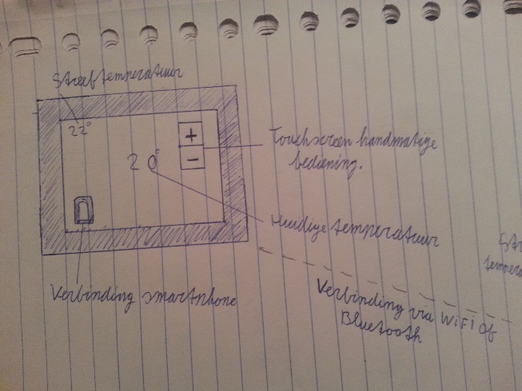
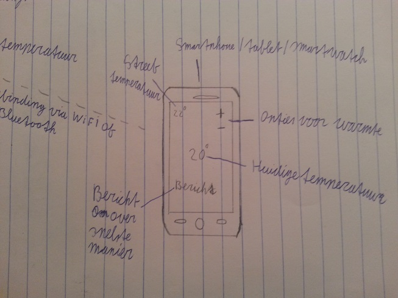
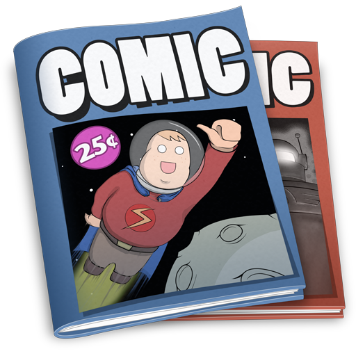
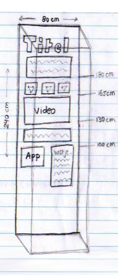
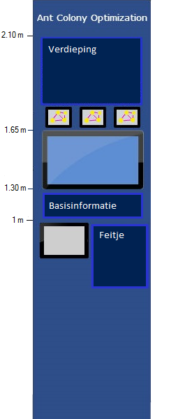
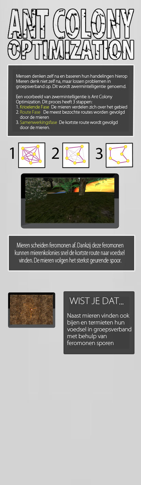

Dump
Dit is de dump van mijn portfolio. Hier zijn bijvoorbeeld schetsen en opdrachten uit de werkcolleges te vinden.
Schetsen MIT3
Schets toestel om temperatuur te regelen 
Schets applicatie
Strip
Plaatje linkt naar de strip
Ikea opdracht
De Ikea opdrachtArtis
Bij dit project heb ik aan verschillende onderdelen gewerkt in het groepje. Zo heb ik aan het verslag gewerkt, de mogelijkheden onderzocht van het interactieonwerp en design voor de vitrine en heb ik aan de poster gewerkt. Daarnaast heb ik de antwoorden op onze enquete nagekeken.
De volgende plaatjes illustreren de ontwikkeling van de vitrine:
  